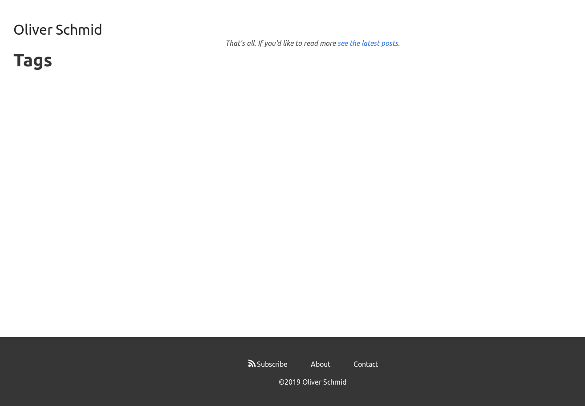

The site broke recently. Somehow Hugo had stopped rendering posts or tags and the homepage looked like it had no
content.

Turns out a Page’s .URL field was deprecated for new syntax in an update of Hugo:
9:15:43 AM: WARN 2019/04/28 16:15:43 Page's .URL is deprecated and will be removed in a future release. Use .Permalink or .RelPermalink. If what you want is the front matter URL value, use .Params.url.
I’m not sure why exactly this broke things though. Back in April I configured Netlify to use a version of Hugo
that still has a .URL field: 0.55.4. Maybe Netlify rebuilt my site in the intervening months?
In any case, this became a good moment to upgrade Hugo and give my site some much-needed maintenance.
- So I got rid of some dead code from when I was experimenting with Netlify Functions and building the site using Gulp.
- Reran webhint and Lighthouse and
fixed some hints about security headers, resource cross-origin attributes, and upgrading to
sha384 for Subresource Integrity hashes.
- Updated my robots.txt to skip some pages that aren't worth crawling.
- Moved my posts from
/post/<title>/ to the Hugo conventional /posts/<title>/
and added redirects.
- Fixed up some width styling to make blog posts more readable.
- Increased the colour contrast of some lighter elements so that they meet accessibility standards
- Changed the colours of the pagination elements to draw people into reading the next page as opposed to
noticing the current page number.
- Used the CSS grayscale filter to make the social media share links less noticeable.
- Added a search field for the site that uses DuckDuckGo as a backend.
It’s been a fun bit of website design!